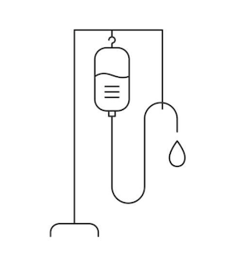

<div class="p-5">
    <div class="row text-center">
        <div class="col-md-6">
            <div class="text-center">
                
            </div> 
        </div>
        <div class="col-md-6">
            <p>
                Intravenous (IV) therapy is the giving of liquid substances directly into a vein. It can be intermittent or continuous; continuous administration is called an IV drip. IV Nutrition Therapy is a form of IV treatment that supplies the body with necessary vitamins and minerals. To replenish deficiencies or aid in healing.
            </p>
            <h6>Why Use IV Therapy?</h6>
            <p>
                Compared with other routes ad administration, the IV route is one of the fastest and most effective ways to deliver fluids and medication throughout the body. Absorption when taken orally can be between 15%-30% while IV absorption into the cells is 90%-100%! Common attributes of IV nutrients are Vitamins, Minerals, Amino acids and Anti-oxidants. Conditions treated include; intense sporting events, curing hangover, hair, skin and nails improvement, improved skin clarity, reducing toxins in the body, boost in immunity etc.
            </p>
        </div>
    </div>
</div>